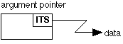
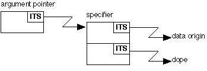
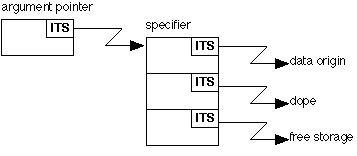
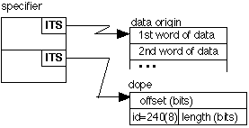
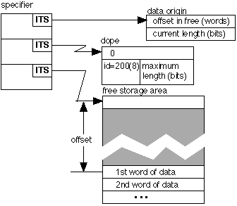
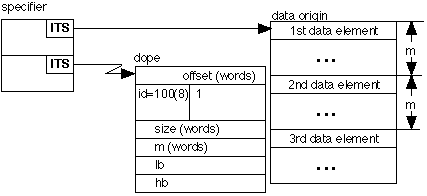
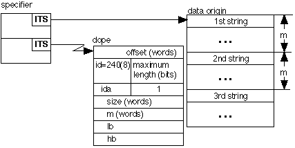
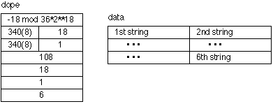
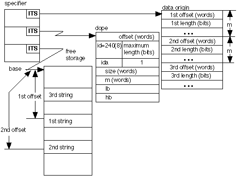

MULTICS SYSTEM-PROGRAMMERS' MANUAL Section BB.2
PUBLISHED: 6/24/66
Identification
System Module Interfaces (PL/I Subset for System Programming)
Purpose
All Multics system modules will, with a few exceptions, be coded in PL/I. However, it is desirable that the format for passing arguments when calling system procedures be simple enough so that non-PL/I-coded procedures will not be difficult to use. In addition, it is desired that system modules be, as far as is possible, independent of PL/I implementation. It is possible to achieve these goals if the coding of system modules is restricted to a subset of PL/I. There are four sets of rules; 1) restrictions on argument passing for all system modules, 2) other restrictions for all system modules, 3) additional restrictions for the "central" supervisor modules and 4) restrictions on the use of common data bases (i.e. data accessible by more than one process). The division between central supervisor modules and other system modules is one of function and it is expected that as each module gets defined it will be clear which type it is.
Summary of the Subset
-
Restrictions on argument Passing
Only the following types of arguments may be passed between separately translated modules.
a) All scalars (i.e., arithmetic, bit and character strings, label, and pointer).
b) any one-dimensional array of the above, (a), scalars.
Note: PL/I passes a file name as a pointer to the file control block, an area name as a pointer to the base of the area, and a procedure name as a label which points to the entry point.
-
Other restrictions for all system modules.
a) The unspec function is implementation dependent and may be used only with permission.
b) Since the use of non-matching declarations across calls is implementation dependent this may be done only with permission.
-
Additional restrictions for central supervisor modules.
a) All restrictions of 2 above
b) On conditions and signal statements may not be used.
c) None of the I/O statements may be used.
-
Restrictions for common data bases.
Common data bases may not be used to pass process dependent information from one process to another.
The following types of data are process dependent.
a) Label
b) Pointer
Argument types
For the purpose of this discussion we will divide the legal argument types into six classes; i) scalars (except strings), ii) non-varying strings, iii) varying strings, iv) 1-dimensional arrays of scalars (except strings), v) 1-dimensional arrays of non-varying strings, vi) 1-dimensional arrays of varying strings. When a procedure is called using the standard call the arguments are specified by a list of pointers (see BD.7.02). To understand fully the system interface specifications the reader needs to know, when he writes one of the legal argument types, to what the corresponding argument pointer is actually pointing. In case i) it points to the actual data.

In all other cases it points to a specifier. A specifier is address-dependent material, i.e., it contains ITS pairs. In cases ii), iv) and v), the specifier is two ITS pairs, the first points to the data origin (which is usually the actual data) and the second points to the dope.

In cases iii) and vi), in addition to these two pointers there is a third pointer which points to a free storage area.

Dope is address-independent descriptive material for the data which is pointed to by the corresponding specifier. The first word of the dope is an offset and succeeding words are the breakdown.
Scalars (except strings)
In this case the argument pointer points directly to the data. There are three types; arithmetic, label, and pointer. Arithmetic scalars are either one or two words depending on their precision. Label scalars are always four words, i.e., two ITS pairs. The first ITS is the program point corresponding to the label. The second ITS is the value of the stack pointer (the base pair sb-sp) at the time the label was assigned. Pointer scalars are always two words, i.e,, one ITS pair.
Non-Varying strings
The specifier for a non-varying string contains an ITS pointer to the data origin and an ITS pointer to the dope. The specifier and dope have the format,

The first word of the dope contains the offset, in bits, of the beginning of the string from the data origin. The second word of the dope contains an identity code (which is always 240(8) for non-varying strings) in the first nine bits. The remaining 27 bits contain the length of the string in bits. Character strings are treated as if they were bit strings, i.e., a string of 5 characters has length = 45. The string is packed into consecutive words, beginning with the data origin.
Varying Strings
The specifier for a varying string contains an ITS pointer to the data origin, an ITS pointer to the dope, and an ITS pointer to the base of a free storage area. The format is,

In this case the data origin pointer does not point to the actual string, but to further descriptive information. The string is always in a free storage area. The offset (off) locates the first word of the string within the free storage area. The identity code is always 200(8) for varying strings. The string is packed in consecutive words. The maximum length is an upper bound on the number of bits the string will ever contain. The current length indicates the number of bits of storage currently occupied by the string.
1 - Dimensional Arrays of Scalars (non-string)
an argument pointer for any array always points to a specifier The specifier and dope for an array of non-string scalars has the format,

The right half of the first word of the dope contains the offset (in words) of the addressing origin from the data origin. The addressing origin is the location of the first word of the (perhaps hypothetical) element with zero subscript. The data origin is the location of the first data element, i.e., the element whose subscript is lb. The right half of the second dope word contains the number of dimensions, which is one. The identity code for arrays of non-string scalars is always 100(8). The third word contains the total size (in words) of the array. The fifth and sixth words contain the lower bound (lb) and higher bound (hb) for the subscript. The fourth word contains the multiplier which is the number of words from the beginning of one element to the beginning of the next element. The multiplier must be at least as large as the length of a data element, however, it may be larger, i.e., data elements need not be consecutive in memory, but they must be evenly spaced. The bounds lb and hb define the subscript range and lb or both lb and hb may be negative, however, lb must be less than or equal to hb. Storage may or may not be reserved for elements with subscripts which lie outside the range lb - hb. The offset is zero if lb = 0, negative if lb>0, and positive if lb<0.
1 - Dimensional Arrays of Non-Varying Strings
The specifier and dope for an array of non-varying strings has the format,

The format for the dope is the same as that for an array of non-string scalars with the following exceptions. The offset is expressed in bits, mod 36*2**18, and occupies a full word. An additional word has been inserted after the offset. It contains the length of each string (in bits) in the array and the identity code 240(8). The identity code ida in the first 9 bits of the third word is 340(8) if the array is packed and 300(8) if it is aligned. All strings in the array must be the same length. Finally, the multiplier and size are expressed in words if the array is aligned and in bits if the array is packed and need not be a multiple of 36. A one dimensional array of strings may be packed, i.e., the strings need not begin at the beginning of a word. For example,

is the dope and data for an array of 6 strings, each 2 characters in length, with subscripts running from 1 to 6.
1-Dimensional Arrays of Varying Strings
The dope and specifier for an array of varying strings has the format,

The specifier contains three ITS pointers. The third points to the base of a free storage area where all of the strings in the array are stored. The dope is the same as for an array of non-varying strings except that the second word contains the maximum length for strings in the array rather than the current length. The data origin for an array of varying strings is the location of the first word of the first pair of an array of pairs which define each of the varying strings. The dope (except for the maximum) applies to this array (treated as an array of double word scalars). Each pair specifies the offset and length for the corresponding varying string. This offset, which is in words, is relative to the base of the free storage area and locates the first word of the string. The strings always begin at the first bit of the word. The second word of the pair contains the current length of the string, in bits. The actual strings may occur in any order in the free storage area. Whenever the length of a varying string is changed, storage for the string may have to be reallocated. The management and format of free storage is discussed in another section of this manual.
The Unspec Function
The unspec function in PL/I is implementation dependent. Implementation dependent features of PL/I may be used only by permission and only when necessary. Whenever the unspec function is used, comments should be included which explain why it is being used. Any use of the unspec function should be recorded and approved by the Programming Coordinator.
Non-Matching Declarations
The remarks made in regard to the use of the unspec function also apply to the use of non-matching declarations across calls. This situation is extremely treacherous since there is no warning flag as there is in the case of the unspec function. Any instance of mis-matched declarations must be thoroughly commented.
Additional Restrictions for the Central Supervisor
Somewhat imprecisely, the central supervisor modules are those which are concerned with fault and interrupt management, input, output, etc. Most of these modules may still be written in PL/I, however, they certainly cannot use the signal, on, or any of the input/output statements. In general, extreme care must be exercised in the coding of these modules in PL/I and complete rules for coding them cannot be given here,
Data Bases Common to Several Processes
Any segment which is common to more than one process must not contain any process dependent information. In the Multics system an ITS pair (which is a complete machine address) contains process dependent information, namely a segment number. Both label and pointer data in PL/I contain ITS pairs, hence, neither type of data may be stored in a common data base. Certain conventions regarding accessing and interlocking are necessary. They are discussed elsewhere in this manual.
PL/I Storage Allocation
Some knowledge of the PL/I conventions for storage allocation enhances the understanding and intelligent use of the system module interface specification. The PL/I translator assigns storage within several segments: the procedure being translated < proc>, the stack <stack> (pointed to by sb-sp), static storage <stat_>, free storage <free_>, and any segments explicitly referenced by use of the notation seg$ext. The user may replace either <stat_> or <free_> or both by including, in his program, one of the statements,
% segment statid; % segment statid, freeid;where statid is the name of the segment to be used in place of <stat_> and freeid is the name of the segment to be used in place of <free_>. In this writeup "stat_" will refer to the segment whose name is stat or to its replacement if the user has replaced it. A similar convention holds for "free_".
Data is either adjustable or non-adjustable. Data is non-adjustable if all of its extents (subscript bounds, lengths, maxima) are declared by integer constants. Data is adjustable if at least one of its extents is not declared by an integer constant, e.g. the declaration
dcl a(n);causes a to be adjustable data. Even though the translator assigns all data to some segment during translation, the actual storage for the data is frequently not allocated until during execution. The time at which allocation occurs determines to which segment the dope and specifier (if any) for the data is assigned.
The following table shows to which segment data, dope and specifiers are assigned for each storage class.
PL/I Storage class location location location of data of speci- of dope fier ---------------------------------------------------------- Static <stat_> <stat_> <proc> automatic, non-adjustable <stack> <stack> <proc> Automatic, adjustable <stack> <stack> <stack> Based, non-adjustable <free_> <stack> <proc> Based (area), non-adJustable <area> <stack> <proc> Based, adjustable <free_> <stack> <stack> Based (area), adjustable <area> <stack> <stack>
Static Storage
Information which is constant throughout the life of a procedure is compiled into the procedure. The dope for static (which is always non adjustable) is constant. It is computed by the compiler and compiled into the procedure. All data with static storage class is assigned to <stat_>, unless the notation seg$ext is used, in which case it is assigned to <seg>. The storage for a variable with static storage class is allocated when the variable is first referenced. The specifier is also computed at that time and stored in <stat_> (or <seg>).
Automatic Storage
Storage for a variable with automatic storage class is allocated in <stack> upon entry to the block in which it is declared and is unallocated upon leaving the block. The dope for non-adjustable automatic is constant and is computed by the compiler and compiled into the procedure. The dope for adjustable automatic cannot be computed until the storage is allocated. At that time the dope is computed and stored in <stack>. The specifier for both non-adjustable and adjustable is also computed and stored in <stack> at allocation time. Each time the block in which the declaration appears is entered the variable information has to be recomputed and storage has to be allocated. Since storage is allocated at block entry time changing any of the variable extents for adjustable automatic within the block is considered to be a programming error even though it has no effect.
Based Storage
Storage for a variable with based storage class is allocated when an allocate statement referring to the variable is executed. Storage is allocated in <free_> unless an "in (area)" clause is used in the allocate statement, in which case storage is allocated in "area". The dope for non-adjustable controlled is constant and is computed by the compiler and compiled into the procedure. The dope for adjustable controlled and the specifier for both adjustable and non-adjustable are computed on each reference to the data and stored in <stack>. The time at which allocation takes place is completely under control of the user. The values of any variable extents at allocation time determine the amount and layout of storage actually allocated. Changing the values of variable extents after allocation is not a programming error in all cases (otherwise there would be no possibility of variation in the different allocations). However, since the dope is recomputed at every reference (without a corresponding change in allocation), changing the variable extents for adjustable controlled must be done with extreme caution. Adjustable controlled storage is extremely powerful. It is also extremely dangerous. Finally, referring to the same data using different based declarations is the most dangerous type of mismatched declarations.